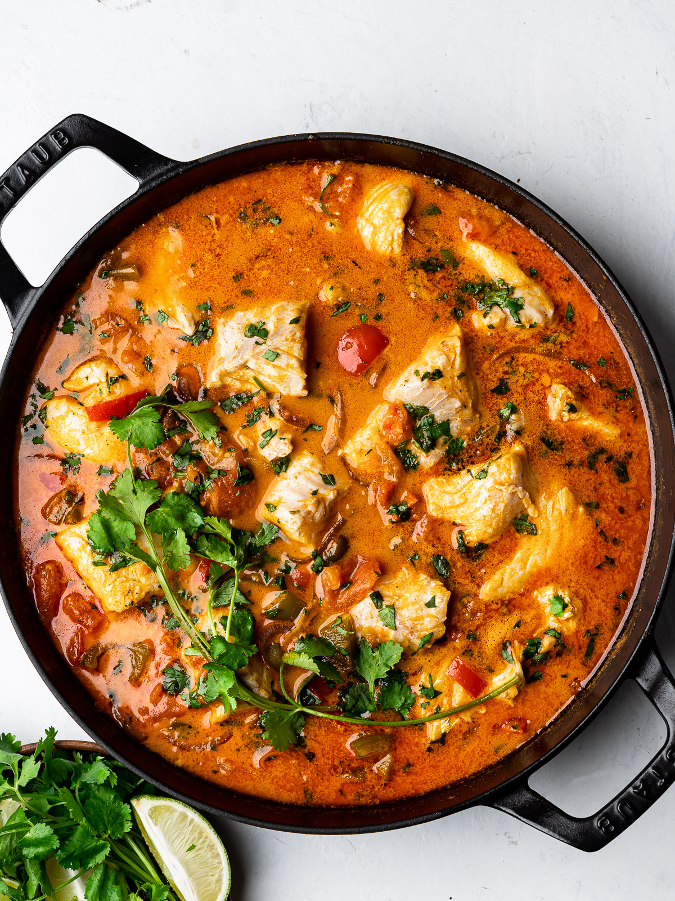

Moqueca

Recipe Description
Moqueca is a brazilian stew dish popular in North and Northeast regions, made with palm oil, fish, shrimps and veggies.
Dish type: non-veg
Dish temperature serving: Warm temperature
Dish complexity: easy
Origin country: Brazil
Ingredients
- 1kg of pangasius or codfish
- 250g shrimps (optional)
- 1 red paprika
- 1 green paprika
- 1 yellow paprika
- 6 eggs
- 2 spoons of palm oil
- 2 onions
- black peper
- coriander
- parsley
- chives
- 150ml of water
- 200ml coconut milk
Steps
- Put everything together in a pot, except for the eggs and let it cook for 20 min
- Boil the eggs separately, and when everything is finished, peal the eggs and add them to the dish
Go back to homepage